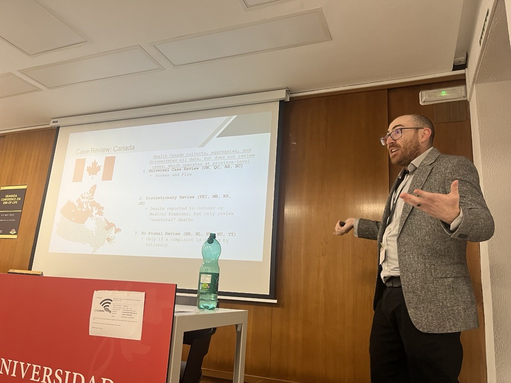

Policy design
Which rules assign responsibility and resources for maintaining and sharing patients’ care preferences?
Research
I study which policy provisions help organizations put care into practice, what resources that requires, and whether the results reflect patients’ goals.
Which rules assign responsibility and resources for maintaining and sharing patients’ care preferences?
How do organizations put those rules into practice, and what staff time and other resources does that require?
What can monitoring systems reveal about end-of-life care, and where are the gaps in what they observe?
My dissertation examines the costs, organizational demands, and policy context of implementing substance-use care in primary care. I am extending its economic evaluation and policy-mapping methods to end-of-life care, alongside my research on advance care planning and medical assistance in dying.
My planned first project will compare state policies for advance-directive registries and electronic POLST systems, then examine how organizations maintain, retrieve, and use those records. Related work will assess implementation costs and the information available to oversight systems. The longer-term question is whether these processes help care reflect patients’ goals; record availability alone cannot establish that outcome.
